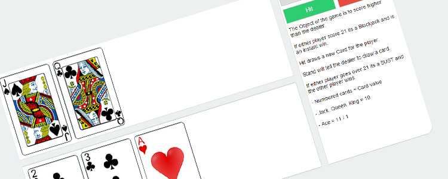

The purpose of Solitaire generally involves manipulating a layout of cards with a goal of sorting them in some manner. However it is possible to play the same games competitively (often a head to head race) and cooperatively.
Solitaire games typically involve dealing cards from a shuffled deck into a prescribed arrangement on a tabletop, from which the player attempts to reorder the deck by suit and rank through a series of moves transferring cards from one place to another under prescribed restrictions. Some games allow for the reshuffling of the deck(s), and/or the placement of cards into new or "empty" locations. In the most familiar, general form of Patience, the object of the game is to build up four blocks of cards going from ace to king in each suit, taking cards from the layout if they appear on the table.

Blackjack, also known as twenty-one, is the most widely played casino banking game in the world.[1] Blackjack is a comparing card game between a player and dealer, meaning that players compete against the dealer but not against any other players. It is played with one or more decks of 52 cards. The object of the game is to beat the dealer, which can be done in a number of ways:
- Get 21 points on the player's first two cards (called a blackjack), without a dealer blackjack;
- Reach a final score higher than the dealer without exceeding 21; or
- Let the dealer draw additional cards until his or her hand exceeds 21.
The player or players are dealt an initial two-card hand and add together the value of their cards. Face cards (kings, queens, and jacks) are counted as ten points. A player and the dealer can count their own ace as 1 point or 11 points. All other cards are counted as the numeric value shown on the card. After receiving their initial two cards, players have the option of getting a "hit", or taking an additional card. In a given round, the player or the dealer wins by having a score of 21 or by having the highest score that is less than 21. Scoring higher than 21 (called "busting" or "going bust") results in a loss.
Mauris eleifend est et turpis. Duis id erat. Suspendisse potenti. Aliquam vulputate, pede vel vehicula accumsan, mi neque rutrum erat, eu congue orci lorem eget lorem. Vestibulum non ante. Class aptent taciti sociosqu ad litora torquent per conubia nostra, per inceptos himenaeos. Fusce sodales. Quisque eu urna vel enim commodo pellentesque. Praesent eu risus hendrerit ligula tempus pretium. Curabitur lorem enim, pretium nec, feugiat nec, luctus a, lacus.
Duis cursus. Maecenas ligula eros, blandit nec, pharetra at, semper at, magna. Nullam ac lacus. Nulla facilisi. Praesent viverra justo vitae neque. Praesent blandit adipiscing velit. Suspendisse potenti. Donec mattis, pede vel pharetra blandit, magna ligula faucibus eros, id euismod lacus dolor eget odio. Nam scelerisque. Donec non libero sed nulla mattis commodo. Ut sagittis. Donec nisi lectus, feugiat porttitor, tempor ac, tempor vitae, pede. Aenean vehicula velit eu tellus interdum rutrum. Maecenas commodo. Pellentesque nec elit. Fusce in lacus. Vivamus a libero vitae lectus hendrerit hendrerit.